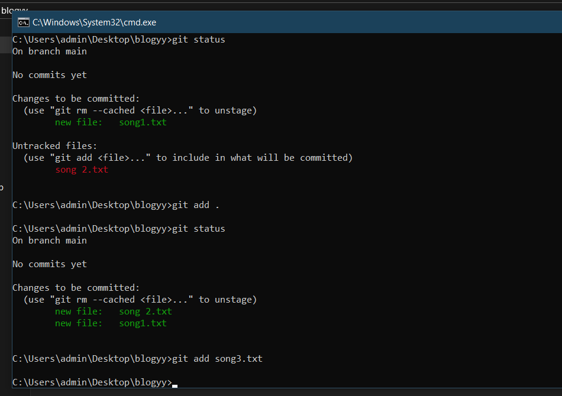
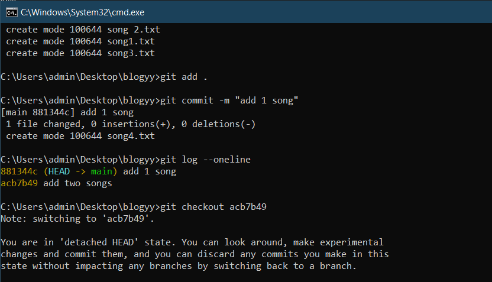
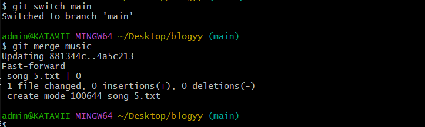
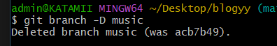

Git is a version control system.
A version control system is a software tool that helps to track and manage changes to files, code, documents, and any other types of digital content over time.
Other types of version control system include
In this blog we will be going through Git and Github
step 1:check if you have git installed in your machine or not

Checking if you have git installed in your pc
step 2:If you don’t have git installed, head over to https://www.git-scm.com/ and download git from there.
Now, let Git know who you are. This is an important step after installing git as each Git commit uses this information.
To let git know who you are, you pass in the username and email address
*To configure your username: git config --global user.name “your username”
*To configure your email address: git config –global user.email “your email address”
Tip***use your github email address or if you don’t have a github account, use an email address that you will use to sign up for github.
Configuring Git
Before we can use git in our project, we need initialize a git repository inside that project.
*A git repository is a storage location where GIT version control system manages and stores project’s files and revision history.
*To check if the project contains a git repository, run the command git status where you will get a message “fatal not a git repository…” if is not git is not aready initialized. Any other message means that the project contains a git repository.
*To initialize git use git init command. If its initialized succesfully you will recieve a message “Initialized an empty git repository in…”
NB//Make sure to open cmd on the file you want to control
Initializing Git commands
A staging area is an area where changes to files are prepared before they are committed to repository.
*Whenever you finish part of the work, you should add the files to a staging area.
*To add file in the staging area use these commands git add filename.
To add multiple files use git add file1 file2 file3 or git add . , git add --all.
There are 2 types of files, tracked files and untracked files
Tracked files are files that are ready to be committed to the repository you are working on.
Untracked files are files that have not yet been added to the staging area
To check whether the the files are staged or not use git status
Adding files in the staging area
A commit in git is a snapshot of changes made to a repository at a particular point in time.
Adding commits keeps track of our progress and changes as we work.
You make a new commit by using git commit –m “commit message” .
If we want we can view past commits using the git log command.
We can use git log --oneline if we want a bit more compressed output of git log.
To go back to particular commit use git checkout commitName
To write good commits answer the question This commit will?
Commit changes to a git repository
A branch is a new/separate version of the main repository.
Branches are important because they allow multiple developers to work on different features, bug fixes, or experiments simultaneously without interfering with each other’s work.
To create branch, we use the command git branch new-branch-name

creating a branch command
We can then view all the branches we have using the command git branch
The branch with a * symbol to its left is the active branch/the branch we are in.

Viewing all branches command
We can change branches using the command git checkout branch-name or git switch branch-name

Switching active branches
Once you finish working in your branch and you are comfortable that is what you want, we merge this branch to the master branch/ the main branch.
To merge a branch, add all the changes made in that branch to the staging area, then commit those changes.
After that go to the main branch you want to merge the branch with
Use the command git merge branch-name
Merging command
You can delete a branch using the command git branch –D branch-name
Deleting a branch command
Congratulations! You are now aware of git and its commands.Below are some of the things i recommend you learn